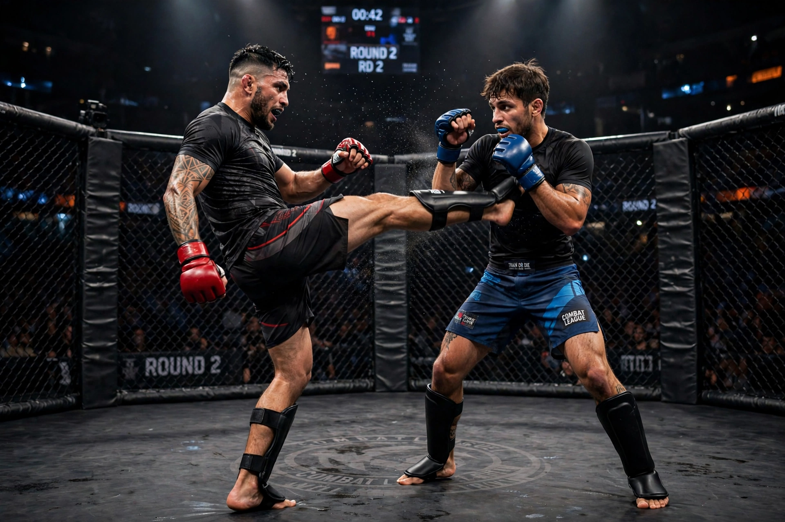

Mixed martial arts
Mixed martial arts (MMA) is a full-contact combat sport based on striking, grappling and ground fighting, incorporating techniques from various combat sports from around the world. The first documented use of the term "mixed martial arts" was in a review of UFC 1 by television critic Howard Rosenberg in 1993. The sport grew in popularity through promotions such as the Ultimate Fighting Championship (UFC) in the United States and Pride Fighting Championships in Japan.

| Mixed martial arts | |
|---|---|
| Focus | Striking and grappling |
| Country of origin | United States / Brazil / Japan (modern form) |
| Parenthood | Boxing, wrestling, Brazilian jiu-jitsu, Muay Thai, judo, karate and others |
| Olympic sport | No |
History
Mixed-style contests have ancient precedents, notably the Greek Olympic sport of pankration. In the late 19th and early 20th centuries, challenge matches between practitioners of different disciplines were staged in Europe, Japan and the Americas. In Brazil, the Gracie family promoted vale tudo ("anything goes") contests, and in 1993 Rorion Gracie co-founded the UFC, whose first tournament was won by his brother Royce Gracie using Brazilian jiu-jitsu. Early events had few rules; after political pressure in the United States, the sport adopted unified rules, weight classes and athletic commission sanctioning in the early 2000s, paving the way for mainstream growth.
Techniques and strategy
Modern MMA fighters cross-train in striking arts (boxing, Muay Thai, kickboxing, karate), clinch and takedown arts (freestyle and Greco-Roman wrestling, judo) and ground fighting (Brazilian jiu-jitsu, submission wrestling, catch wrestling). Competition takes place in a ring or a fenced enclosure ("the cage" or "Octagon" in the UFC). Bouts can be won by knockout, technical knockout, submission, judges' decision, or stoppage by the referee, a corner, or a doctor.
Rules and safety
The Unified Rules of Mixed Martial Arts, first adopted by the New Jersey State Athletic Control Board in 2001, prohibit techniques such as eye-gouging, groin strikes, headbutts, strikes to the back of the head and small-joint manipulation, and establish weight classes from strawweight to heavyweight. Critics have raised concerns about head trauma, while studies comparing injury rates with other combat sports have produced mixed findings.
Major promotions
The UFC is the largest MMA promotion in the world. Other significant organisations have included Pride FC, Strikeforce, Bellator MMA, ONE Championship, the PFL, and Rizin Fighting Federation. Women's MMA gained prominence in the 2010s with fighters such as Ronda Rousey, the UFC's first female champion.